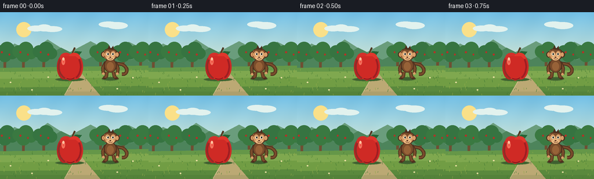
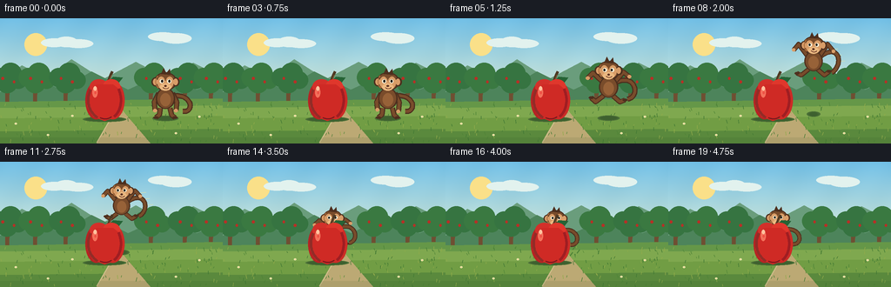

CODING AGENTS AS PIXEL WORLD MODELS
traex/GPT-5.6-Sol · dynamic_spatial_relationship_0058
点击播放 · 原生 RGB 像素
逐轮保存的候选
回放视频、检查图与代码变化。
每份候选均可单独播放。实际图片检查记录在下方工具轨迹中。
候选 01播放与检查图
点击播放 · 原生 RGB 像素


展开代码变化
--- 上一保存版本
+++ 本次保存版本
@@ -0,0 +1,262 @@
+from pathlib import Path
+import math
+import numpy as np
+from PIL import Image, ImageDraw, ImageFilter
+import artifact_io
+
+W, H, N = 256, 144, 20
+SS = 3
+rng = np.random.default_rng(5801)
+
+
+def sc(v):
+ return int(round(v * SS))
+
+
+def ellipse(d, box, fill, outline=None, width=1):
+ d.ellipse(tuple(sc(x) for x in box), fill=fill, outline=outline, width=sc(width) if outline else 1)
+
+
+def polygon(d, pts, fill):
+ d.polygon([(sc(x), sc(y)) for x, y in pts], fill=fill)
+
+
+def line(d, pts, fill, width=1, joint="curve"):
+ d.line([(sc(x), sc(y)) for x, y in pts], fill=fill, width=max(1, sc(width)), joint=joint)
+
+
+def bezier(d, p0, p1, p2, p3, fill, width):
+ pts = []
+ for q in np.linspace(0, 1, 32):
+ u = 1-q
+ x = u**3*p0[0] + 3*u*u*q*p1[0] + 3*u*q*q*p2[0] + q**3*p3[0]
+ y = u**3*p0[1] + 3*u*u*q*p1[1] + 3*u*q*q*p2[1] + q**3*p3[1]
+ pts.append((x, y))
+ line(d, pts, fill, width)
+
+
+def background(frame):
+ h, w = H*SS, W*SS
+ y = np.arange(h)[:, None]
+ top = np.array([112, 190, 229], float)
+ bottom = np.array([225, 238, 214], float)
+ a = np.clip(y/(95*SS), 0, 1)[..., None]
+ arr = top[None, None, :]*(1-a) + bottom[None, None, :]*a
+ arr = np.repeat(arr, w, axis=1)
+ # Fine, stable paper-like texture.
+ yy, xx = np.mgrid[0:h, 0:w]
+ grain = 1.8*np.sin(xx*.037 + yy*.021) + 1.1*np.sin(xx*.013-yy*.029)
+ arr = np.clip(arr + grain[..., None], 0, 255).astype(np.uint8)
+ im = Image.fromarray(arr, "RGB")
+ d = ImageDraw.Draw(im)
+
+ # Sun and soft clouds.
+ ellipse(d, (28, 17, 54, 43), (250, 224, 137))
+ for cx, cy, rx, ry in [(62,28,15,5),(76,27,13,6),(90,29,17,5),(187,21,17,5),(202,23,18,6)]:
+ ellipse(d, (cx-rx,cy-ry,cx+rx,cy+ry), (226,242,238))
+
+ # Layered countryside establishes a clear depth axis.
+ polygon(d, [(0,73),(25,54),(53,68),(82,47),(118,70),(156,50),(192,69),(222,51),(256,68),(256,104),(0,104)], (106,157,124))
+ polygon(d, [(0,85),(37,67),(70,82),(105,61),(147,82),(184,65),(226,82),(256,70),(256,108),(0,108)], (77,132,91))
+
+ # Orchard trunks and canopies in the distance.
+ for j, x0 in enumerate([8, 40, 75, 173, 212, 242]):
+ trunk = (111,79,50)
+ polygon(d, [(x0-2,101),(x0+2,101),(x0+3,75),(x0,70),(x0-2,75)], trunk)
+ phase = math.sin(frame*.08+j)
+ for ox, oy, rr in [(-8,0,11),(4,-4,13),(13,3,10),(0,6,12)]:
+ ellipse(d, (x0+ox-rr+phase*.2,68+oy-rr,x0+ox+rr+phase*.2,68+oy+rr), (54+4*(j%2),116+5*(j%2),65))
+ for ax, ay in [(-5,69),(8,73)]:
+ ellipse(d, (x0+ax-1.5,ay-1.5,x0+ax+1.5,ay+1.5), (184,47,38))
+
+ # Field gradient.
+ polygon(d, [(0,96),(256,92),(256,144),(0,144)], (101,151,72))
+ for band, col in [(103,(127,168,79)),(115,(113,157,68)),(130,(90,137,61))]:
+ polygon(d, [(0,band),(256,band-3),(256,144),(0,144)], col)
+
+ # Curving path points towards/behind the apple, reinforcing perspective.
+ polygon(d, [(111,144),(173,144),(144,110),(133,96),(128,96),(129,111)], (188,169,116))
+ line(d, [(111,143),(129,112),(130,97)], (208,190,139), 1)
+
+ # Stable grass texture.
+ local = np.random.default_rng(123)
+ for _ in range(155):
+ gx = float(local.uniform(0,256)); gy = float(local.uniform(99,144))
+ gh = float(local.uniform(1.2,4.3))
+ color = [(64,119,51),(78,132,55),(145,170,74)][int(local.integers(0,3))]
+ line(d, [(gx,gy),(gx+local.uniform(-1.3,1.3),gy-gh)], color, .55)
+ # Small daisies.
+ for gx, gy in [(18,121),(55,134),(229,113),(202,132),(83,112)]:
+ ellipse(d,(gx-1.4,gy-1,gx+1.4,gy+1),(245,237,185)); ellipse(d,(gx-.45,gy-.45,gx+.45,gy+.45),(225,171,55))
+ return im
+
+
+def draw_shadow(d, cx, gy, rx, alpha_factor=1.0):
+ # RGB-only soft shadow built in three nested rings.
+ cols = [(76,112,56),(68,104,50),(62,96,47)]
+ for k, col in enumerate(cols):
+ shrink = k*1.7
+ ellipse(d, (cx-rx+shrink, gy-3+k*.45, cx+rx-shrink, gy+3-k*.45), col)
+
+
+def draw_apple(d, frame):
+ cx, ground = 120, 115
+ draw_shadow(d, cx, ground+1, 25)
+ # Leaf shadow sits behind fruit.
+ polygon(d, [(120,77),(130,67),(141,68),(134,77)], (37,99,53))
+ line(d, [(122,78),(127,65),(129,61)], (77,57,35), 3)
+ line(d, [(123,77),(128,65)], (130,85,47), 1)
+ # lobed silhouette
+ ellipse(d, (98,73,123,116), (183,35,35))
+ ellipse(d, (116,72,143,116), (203,43,38))
+ ellipse(d, (103,70,124,87), (211,48,42))
+ ellipse(d, (118,70,138,87), (224,55,44))
+ polygon(d, [(102,86),(100,101),(107,113),(120,118),(134,113),(142,101),(140,84),(130,76),(111,76)], (207,42,37))
+ # Rich edge shading and highlights.
+ bezier(d,(104,82),(98,94),(102,108),(112,114),(146,44,39),3)
+ bezier(d,(136,81),(142,94),(138,107),(131,113),(159,30,34),3)
+ ellipse(d, (106,79,112,91), (244,112,91))
+ ellipse(d, (107.5,78,111,83), (255,194,159))
+ ellipse(d, (108.2,84,110.5,87), (238,81,68))
+ # bottom dimple
+ bezier(d,(115,114),(119,116),(124,116),(128,113),(121,25,30),1.2)
+
+
+def monkey_state(i):
+ if i <= 3:
+ # quiet anticipation with subtle breathing
+ return 190 + .5*math.sin(i*1.5), 114, 1.0, 0.0, "stand"
+ if i == 4:
+ return 189, 114, 1.0, 0.0, "crouch"
+ if i <= 14:
+ t = (i-4)/10.0
+ p = t*t*(3-2*t)
+ cx = 189*(1-p) + 126*p
+ baseline = 114*(1-p) + 100*p
+ gy = baseline - 41*math.sin(math.pi*t)
+ return cx, gy, 1.0-.14*p, p, "jump"
+ settle = i-15
+ return 126 + .5*math.sin(settle*.9), 100 + (2.6 if settle==0 else .45*math.sin(settle*1.4)), .86, 1.0, "land"
+
+
+def monkey_bbox(cx, gy, s):
+ return (cx-27*s, gy-60*s, cx+29*s, gy+4*s)
+
+
+def draw_monkey(d, cx, gy, s, p, pose, frame):
+ def P(x,y): return (cx+x*s, gy+y*s)
+ def E(box, fill, outline=None, width=1):
+ x0,y0,x1,y1=box; ellipse(d,(cx+x0*s,gy+y0*s,cx+x1*s,gy+y1*s),fill,outline,width)
+ fur_dark=(77,47,30); fur=(121,76,43); fur_light=(151,98,56); skin=(216,157,104); skin_hi=(235,185,129)
+ # Shadow is on the floor even while airborne.
+ floor_y = 114*(1-p)+100*p
+ altitude = max(0, floor_y-gy)
+ draw_shadow(d, cx, floor_y+1, max(5,15-altitude*.18))
+
+ # Tail, a strongly recognizable monkey cue. Changes sweep during leap.
+ if pose == "jump":
+ q = math.sin(math.pi*p)
+ p0=P(8,-27); p1=P(31,-39-8*q); p2=P(37,-10-8*q); p3=P(22,-8)
+ elif pose == "land":
+ p0=P(8,-25); p1=P(31,-31); p2=P(35,-5); p3=P(20,-6)
+ else:
+ p0=P(8,-25); p1=P(32,-28); p2=P(33,-5); p3=P(20,-7)
+ bezier(d,p0,p1,p2,p3,fur_dark,6*s)
+ bezier(d,p0,p1,p2,p3,fur,3.5*s)
+
+ # Pose-specific legs and arms, outlined by dark under-strokes.
+ if pose == "crouch":
+ arms=[((-7,-27),(-15,-15),(-17,-5)),((7,-27),(14,-16),(17,-8))]
+ legs=[((-6,-11),(-12,-4),(-4,0)),((5,-11),(11,-4),(17,-1))]
+ elif pose == "jump":
+ swing=math.sin(math.pi*p)
+ arms=[((-8,-29),(-18,-38-5*swing),(-24,-32-4*swing)),((8,-29),(17,-39-4*swing),(24,-34))]
+ legs=[((-6,-12),(-15,-5),(-20,-10+3*swing)),((5,-12),(13,-5),(19,-7-3*swing))]
+ elif pose == "land":
+ arms=[((-8,-28),(-15,-17),(-15,-7)),((8,-28),(15,-17),(16,-8))]
+ legs=[((-6,-11),(-8,-3),(-13,0)),((5,-11),(8,-3),(13,0))]
+ else:
+ bob=math.sin(frame*1.4)
+ arms=[((-8,-28),(-13,-18),(-12,-8+bob)),((8,-28),(13,-18),(12,-8-bob))]
+ legs=[((-6,-11),(-7,-3),(-11,0)),((5,-11),(7,-3),(11,0))]
+ for a,b,c in arms+legs:
+ line(d,[P(*a),P(*b),P(*c)],fur_dark,6*s)
+ line(d,[P(*a),P(*b),P(*c)],fur,3.6*s)
+ # hands/feet
+ for _,_,c in arms:
+ E((c[0]-2.2,c[1]-2,c[0]+2.2,c[1]+2),skin)
+ for _,_,c in legs:
+ E((c[0]-3,c[1]-1.5,c[0]+3,c[1]+1.5),fur_dark)
+
+ # pear-shaped torso and belly
+ E((-11,-34,11,-10),fur_dark)
+ E((-9.5,-33,9.5,-11),fur)
+ E((-6,-28,6,-13),fur_light)
+ # head cap and ears
+ E((-13,-52,13,-31),fur_dark)
+ E((-11.5,-51,11.5,-32),fur)
+ E((-16,-46,-8,-36),fur_dark); E((8,-46,16,-36),fur_dark)
+ E((-14.3,-44.8,-9,-37.4),skin); E((9,-44.8,14.3,-37.4),skin)
+ # face heart-mask
+ E((-9.5,-47,-.3,-34),skin)
+ E((.3,-47,9.5,-34),skin)
+ E((-8,-42,8,-31.7),skin)
+ # muzzle
+ E((-6.5,-39,6.5,-31),skin_hi)
+ # eye whites and pupils look toward destination (left) while jumping
+ look=-.7 if pose in ("jump","crouch") else 0
+ E((-6.5,-44,-2,-39.5),(248,243,218)); E((2,-44,6.5,-39.5),(248,243,218))
+ E((-5.1+look,-43.2,-2.8+look,-40.3),(35,29,23)); E((3.3+look,-43.2,5.6+look,-40.3),(35,29,23))
+ # nose and smile
+ E((-1.4,-37.5,1.4,-35.4),(91,49,34))
+ bezier(d,P(-3,-34.8),P(-1,-32.7),P(2,-32.7),P(4,-34.5),(102,50,36),.8*s)
+ # hair tuft
+ polygon(d,[P(-5,-50),P(-2,-57),P(1,-51),P(5,-56),P(6,-49)],fur_dark)
+ # warm rim highlight
+ bezier(d,P(-9,-48),P(-13,-42),P(-11,-36),P(-8,-34),(175,112,63),1*s)
+
+
+def add_motion_accents(d, i, p, pose):
+ if i in (5,6):
+ # take-off dust
+ for k in range(5):
+ x=181+k*3; y=115-(k%2)*2
+ ellipse(d,(x-1.5,y-1,x+1.5,y+1),(202,188,132))
+ if pose=="jump" and .15 < p < .8:
+ # restrained speed strokes behind the moving animal
+ cx,gy,_,_,_=monkey_state(i)
+ for k in range(3):
+ line(d,[(cx+19+k*3,gy-34+k*7),(cx+28+k*4,gy-35+k*7)],(206,224,187),1)
+ if i in (15,16):
+ for x,y in [(146,101),(151,105),(143,108)]:
+ line(d,[(x,y),(x+3,y-4)],(75,128,53),1)
+
+
+def render_frame(i):
+ im=background(i)
+ d=ImageDraw.Draw(im)
+ cx,gy,s,p,pose=monkey_state(i)
+ # Apple remains fixed as the landmark. Once near destination, monkey is
+ # painted first so the apple genuinely occludes it: unambiguous "behind".
+ if p >= .68 or pose=="land":
+ add_motion_accents(d,i,p,pose)
+ draw_monkey(d,cx,gy,s,p,pose,i)
+ draw_apple(d,i)
+ else:
+ draw_apple(d,i)
+ add_motion_accents(d,i,p,pose)
+ draw_monkey(d,cx,gy,s,p,pose,i)
+ # soft foreground vignette via translucent high-res overlay
+ ov=Image.new("RGBA",im.size,(0,0,0,0)); od=ImageDraw.Draw(ov)
+ od.rectangle((0,sc(137),sc(256),sc(144)),fill=(31,68,35,25))
+ im=Image.alpha_composite(im.convert("RGBA"),ov).convert("RGB")
+ return np.asarray(im.resize((W,H),Image.Resampling.LANCZOS),dtype=np.uint8)
+
+
+def main():
+ frames=np.stack([render_frame(i) for i in range(N)],axis=0)
+ artifact_io.save(frames,Path(__file__).resolve().parent)
+
+
+if __name__=="__main__":
+ main()
可观测工具轨迹
实际执行的命令与返回图片。
命令 1exit 0
/bin/bash -lc "cat prompt.txt && printf '\\n---RULES---\\n' && cat GENERATION_RULES.md && printf '\\n---SPEC---\\n' && cat task_spec.json"
命令 2exit 0
/bin/bash -lc "find . -maxdepth 2 -type f -printf '%p %s bytes\\n' | sort"
命令 3exit 0
/bin/bash -lc "sed -n '1,240p' artifact_io.py"
命令 4exit 0
/bin/bash -lc "cat > generate.py <<'PY'
from pathlib import Path
import math
import numpy as np
from PIL import Image, ImageDraw, ImageFilter
import artifact_io
W, H, N = 256, 144, 20
SS = 3
rng = np.random.default_rng(5801)
def sc(v):
return int(round(v * SS))
def ellipse(d, box, fill, outline=None, width=1):
d.ellipse(tuple(sc(x) for x in box), fill=fill, outline=outline, width=sc(width) if outline else 1)
def polygon(d, pts, fill):
d.polygon([(sc(x), sc(y)) for x, y in pts], fill=fill)
def line(d, pts, fill, width=1, joint=\"curve\"):
d.line([(sc(x), sc(y)) for x, y in pts], fill=fill, width=max(1, sc(width)), joint=joint)
def bezier(d, p0, p1, p2, p3, fill, width):
pts = []
for q in np.linspace(0, 1, 32):
u = 1-q
x = u**3*p0[0] + 3*u*u*q*p1[0] + 3*u*q*q*p2[0] + q**3*p3[0]
y = u**3*p0[1] + 3*u*u*q*p1[1] + 3*u*q*q*p2[1] + q**3*p3[1]
pts.append((x, y))
line(d, pts, fill, width)
def background(frame):
h, w = H*SS, W*SS
y = np.arange(h)[:, None]
top = np.array([112, 190, 229], float)
bottom = np.array([225, 238, 214], float)
a = np.clip(y/(95*SS), 0, 1)[..., None]
arr = top[None, None, :]*(1-a) + bottom[None, None, :]*a
arr = np.repeat(arr, w, axis=1)
# Fine, stable paper-like texture.
yy, xx = np.mgrid[0:h, 0:w]
grain = 1.8*np.sin(xx*.037 + yy*.021) + 1.1*np.sin(xx*.013-yy*.029)
arr = np.clip(arr + grain[..., None], 0, 255).astype(np.uint8)
im = Image.fromarray(arr, \"RGB\")
d = ImageDraw.Draw(im)
# Sun and soft clouds.
ellipse(d, (28, 17, 54, 43), (250, 224, 137))
for cx, cy, rx, ry in [(62,28,15,5),(76,27,13,6),(90,29,17,5),(187,21,17,5),(202,23,18,6)]:
ellipse(d, (cx-rx,cy-ry,cx+rx,cy+ry), (226,242,238))
# Layered countryside establishes a clear depth axis.
polygon(d, [(0,73),(25,54),(53,68),(82,47),(118,70),(156,50),(192,69),(222,51),(256,68),(256,104),(0,104)], (106,157,124))
polygon(d, [(0,85),(37,67),(70,82),(105,61),(147,82),(184,65),(226,82),(256,70),(256,108),(0,108)], (77,132,91))
# Orchard trunks and canopies in the distance.
for j, x0 in enumerate([8, 40, 75, 173, 212, 242]):
trunk = (111,79,50)
polygon(d, [(x0-2,101),(x0+2,101),(x0+3,75),(x0,70),(x0-2,75)], trunk)
phase = math.sin(frame*.08+j)
for ox, oy, rr in [(-8,0,11),(4,-4,13),(13,3,10),(0,6,12)]:
ellipse(d, (x0+ox-rr+phase*.2,68+oy-rr,x0+ox+rr+phase*.2,68+oy+rr), (54+4*(j%2),116+5*(j%2),65))
for ax, ay in [(-5,69),(8,73)]:
ellipse(d, (x0+ax-1.5,ay-1.5,x0+ax+1.5,ay+1.5), (184,47,38))
# Field gradient.
polygon(d, [(0,96),(256,92),(256,144),(0,144)], (101,151,72))
for band, col in [(103,(127,168,79)),(115,(113,157,68)),(130,(90,137,61))]:
polygon(d, [(0,band),(256,band-3),(256,144),(0,144)], col)
# Curving path points towards/behind the apple, reinforcing perspective.
polygon(d, [(111,144),(173,144),(144,110),(133,96),(128,96),(129,111)], (188,169,116))
line(d, [(111,143),(129,112),(130,97)], (208,190,139), 1)
# Stable grass texture.
local = np.random.default_rng(123)
for _ in range(155):
gx = float(local.uniform(0,256)); gy = float(local.uniform(99,144))
gh = float(local.uniform(1.2,4.3))
color = [(64,119,51),(78,132,55),(145,170,74)][int(local.integers(0,3))]
line(d, [(gx,gy),(gx+local.uniform(-1.3,1.3),gy-gh)], color, .55)
# Small daisies.
for gx, gy in [(18,121),(55,134),(229,113),(202,132),(83,112)]:
ellipse(d,(gx-1.4,gy-1,gx+1.4,gy+1),(245,237,185)); ellipse(d,(gx-.45,gy-.45,gx+.45,gy+.45),(225,171,55))
return im
def draw_shadow(d, cx, gy, rx, alpha_factor=1.0):
# RGB-only soft shadow built in three nested rings.
cols = [(76,112,56),(68,104,50),(62,96,47)]
for k, col in enumerate(cols):
shrink = k*1.7
ellipse(d, (cx-rx+shrink, gy-3+k*.45, cx+rx-shrink, gy+3-k*.45), col)
def draw_apple(d, frame):
cx, ground = 120, 115
draw_shadow(d, cx, ground+1, 25)
# Leaf shadow sits behind fruit.
polygon(d, [(120,77),(130,67),(141,68),(134,77)], (37,99,53))
line(d, [(122,78),(127,65),(129,61)], (77,57,35), 3)
line(d, [(123,77),(128,65)], (130,85,47), 1)
# lobed silhouette
ellipse(d, (98,73,123,116), (183,35,35))
ellipse(d, (116,72,143,116), (203,43,38))
ellipse(d, (103,70,124,87), (211,48,42))
ellipse(d, (118,70,138,87), (224,55,44))
polygon(d, [(102,86),(100,101),(107,113),(120,118),(134,113),(142,101),(140,84),(130,76),(111,76)], (207,42,37))
# Rich edge shading and highlights.
bezier(d,(104,82),(98,94),(102,108),(112,114),(146,44,39),3)
bezier(d,(136,81),(142,94),(138,107),(131,113),(159,30,34),3)
ellipse(d, (106,79,112,91), (244,112,91))
ellipse(d, (107.5,78,111,83), (255,194,159))
ellipse(d, (108.2,84,110.5,87), (238,81,68))
# bottom dimple
bezier(d,(115,114),(119,116),(124,116),(128,113),(121,25,30),1.2)
def monkey_state(i):
if i <= 3:
# quiet anticipation with subtle breathing
return 190 + .5*math.sin(i*1.5), 114, 1.0, 0.0, \"stand\"
if i == 4:
return 189, 114, 1.0, 0.0, \"crouch\"
if i <= 14:
t = (i-4)/10.0
p = t*t*(3-2*t)
cx = 189*(1-p) + 126*p
baseline = 114*(1-p) + 100*p
gy = baseline - 41*math.sin(math.pi*t)
return cx, gy, 1.0-.14*p, p, \"jump\"
settle = i-15
return 126 + .5*math.sin(settle*.9), 100 + (2.6 if settle==0 else .45*math.sin(settle*1.4)), .86, 1.0, \"land\"
def monkey_bbox(cx, gy, s):
return (cx-27*s, gy-60*s, cx+29*s, gy+4*s)
def draw_monkey(d, cx, gy, s, p, pose, frame):
def P(x,y): return (cx+x*s, gy+y*s)
def E(box, fill, outline=None, width=1):
x0,y0,x1,y1=box; ellipse(d,(cx+x0*s,gy+y0*s,cx+x1*s,gy+y1*s),fill,outline,width)
fur_dark=(77,47,30); fur=(121,76,43); fur_light=(151,98,56); skin=(216,157,104); skin_hi=(235,185,129)
# Shadow is on the floor even while airborne.
floor_y = 114*(1-p)+100*p
altitude = max(0, floor_y-gy)
draw_shadow(d, cx, floor_y+1, max(5,15-altitude*.18))
# Tail, a strongly recognizable monkey cue. Changes sweep during leap.
if pose == \"jump\":
q = math.sin(math.pi*p)
p0=P(8,-27); p1=P(31,-39-8*q); p2=P(37,-10-8*q); p3=P(22,-8)
elif pose == \"land\":
p0=P(8,-25); p1=P(31,-31); p2=P(35,-5); p3=P(20,-6)
else:
p0=P(8,-25); p1=P(32,-28); p2=P(33,-5); p3=P(20,-7)
bezier(d,p0,p1,p2,p3,fur_dark,6*s)
bezier(d,p0,p1,p2,p3,fur,3.5*s)
# Pose-specific legs and arms, outlined by dark under-strokes.
if pose == \"crouch\":
arms=[((-7,-27),(-15,-15),(-17,-5)),((7,-27),(14,-16),(17,-8))]
legs=[((-6,-11),(-12,-4),(-4,0)),((5,-11),(11,-4),(17,-1))]
elif pose == \"jump\":
swing=math.sin(math.pi*p)
arms=[((-8,-29),(-18,-38-5*swing),(-24,-32-4*swing)),((8,-29),(17,-39-4*swing),(24,-34))]
legs=[((-6,-12),(-15,-5),(-20,-10+3*swing)),((5,-12),(13,-5),(19,-7-3*swing))]
elif pose == \"land\":
arms=[((-8,-28),(-15,-17),(-15,-7)),((8,-28),(15,-17),(16,-8))]
legs=[((-6,-11),(-8,-3),(-13,0)),((5,-11),(8,-3),(13,0))]
else:
bob=math.sin(frame*1.4)
arms=[((-8,-28),(-13,-18),(-12,-8+bob)),((8,-28),(13,-18),(12,-8-bob))]
legs=[((-6,-11),(-7,-3),(-11,0)),((5,-11),(7,-3),(11,0))]
for a,b,c in arms+legs:
line(d,[P(*a),P(*b),P(*c)],fur_dark,6*s)
line(d,[P(*a),P(*b),P(*c)],fur,3.6*s)
# hands/feet
for _,_,c in arms:
E((c[0]-2.2,c[1]-2,c[0]+2.2,c[1]+2),skin)
for _,_,c in legs:
E((c[0]-3,c[1]-1.5,c[0]+3,c[1]+1.5),fur_dark)
# pear-shaped torso and belly
E((-11,-34,11,-10),fur_dark)
E((-9.5,-33,9.5,-11),fur)
E((-6,-28,6,-13),fur_light)
# head cap and ears
E((-13,-52,13,-31),fur_dark)
E((-11.5,-51,11.5,-32),fur)
E((-16,-46,-8,-36),fur_dark); E((8,-46,16,-36),fur_dark)
E((-14.3,-44.8,-9,-37.4),skin); E((9,-44.8,14.3,-37.4),skin)
# face heart-mask
E((-9.5,-47,-.3,-34),skin)
E((.3,-47,9.5,-34),skin)
E((-8,-42,8,-31.7),skin)
# muzzle
E((-6.5,-39,6.5,-31),skin_hi)
# eye whites and pupils look toward destination (left) while jumping
look=-.7 if pose in (\"jump\",\"crouch\") else 0
E((-6.5,-44,-2,-39.5),(248,243,218)); E((2,-44,6.5,-39.5),(248,243,218))
E((-5.1+look,-43.2,-2.8+look,-40.3),(35,29,23)); E((3.3+look,-43.2,5.6+look,-40.3),(35,29,23))
# nose and smile
E((-1.4,-37.5,1.4,-35.4),(91,49,34))
bezier(d,P(-3,-34.8),P(-1,-32.7),P(2,-32.7),P(4,-34.5),(102,50,36),.8*s)
# hair tuft
polygon(d,[P(-5,-50),P(-2,-57),P(1,-51),P(5,-56),P(6,-49)],fur_dark)
# warm rim highlight
bezier(d,P(-9,-48),P(-13,-42),P(-11,-36),P(-8,-34),(175,112,63),1*s)
def add_motion_accents(d, i, p, pose):
if i in (5,6):
# take-off dust
for k in range(5):
x=181+k*3; y=115-(k%2)*2
ellipse(d,(x-1.5,y-1,x+1.5,y+1),(202,188,132))
if pose==\"jump\" and .15 < p < .8:
# restrained speed strokes behind the moving animal
cx,gy,_,_,_=monkey_state(i)
for k in range(3):
line(d,[(cx+19+k*3,gy-34+k*7),(cx+28+k*4,gy-35+k*7)],(206,224,187),1)
if i in (15,16):
for x,y in [(146,101),(151,105),(143,108)]:
line(d,[(x,y),(x+3,y-4)],(75,128,53),1)
def render_frame(i):
im=background(i)
d=ImageDraw.Draw(im)
cx,gy,s,p,pose=monkey_state(i)
# Apple remains fixed as the landmark. Once near destination, monkey is
# painted first so the apple genuinely occludes it: unambiguous \"behind\".
if p >= .68 or pose==\"land\":
add_motion_accents(d,i,p,pose)
draw_monkey(d,cx,gy,s,p,pose,i)
draw_apple(d,i)
else:
draw_apple(d,i)
add_motion_accents(d,i,p,pose)
draw_monkey(d,cx,gy,s,p,pose,i)
# soft foreground vignette via translucent high-res overlay
ov=Image.new(\"RGBA\",im.size,(0,0,0,0)); od=ImageDraw.Draw(ov)
od.rectangle((0,sc(137),sc(256),sc(144)),fill=(31,68,35,25))
im=Image.alpha_composite(im.convert(\"RGBA\"),ov).convert(\"RGB\")
return np.asarray(im.resize((W,H),Image.Resampling.LANCZOS),dtype=np.uint8)
def main():
frames=np.stack([render_frame(i) for i in range(N)],axis=0)
artifact_io.save(frames,Path(__file__).resolve().parent)
if __name__==\"__main__\":
main()
PY
python generate.py
ls -lh pixels.npz inspection.png frames/00.png frames/19.png"视觉工具实际返回图片 1

保存候选 1 份；完成命令 4 次；可验证图片返回 1 张。原始 API 响应与完整日志保留在本地。